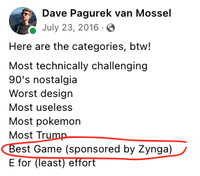
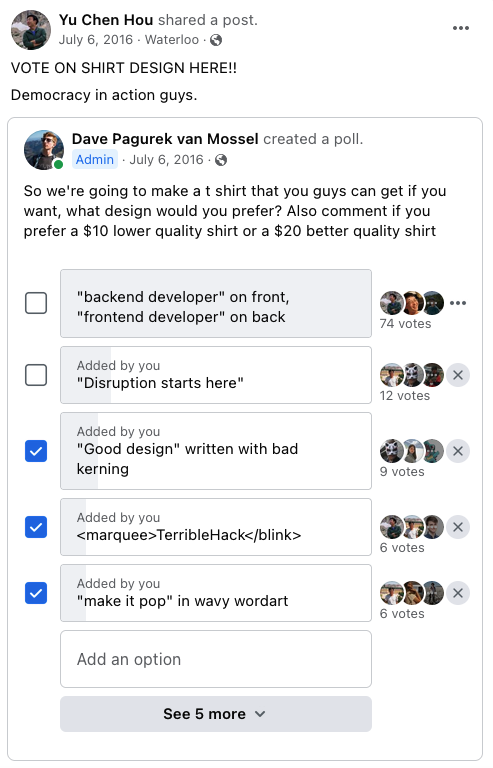
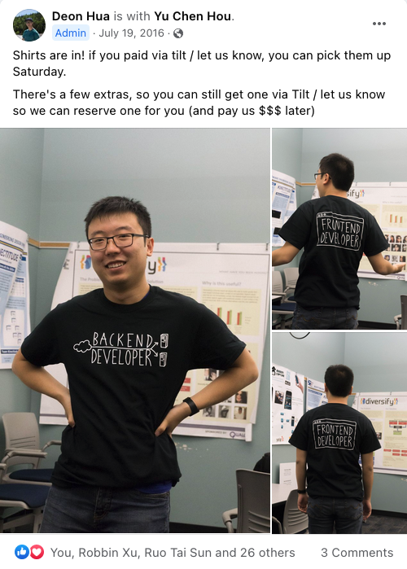
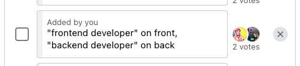
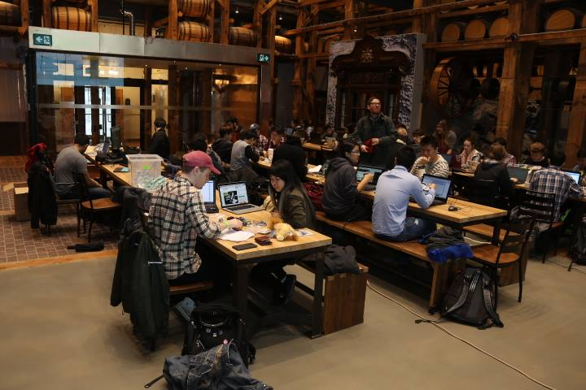
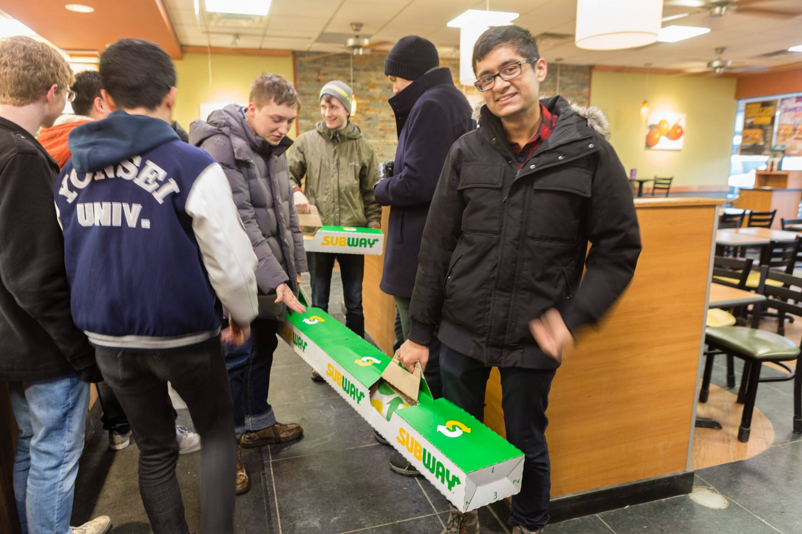
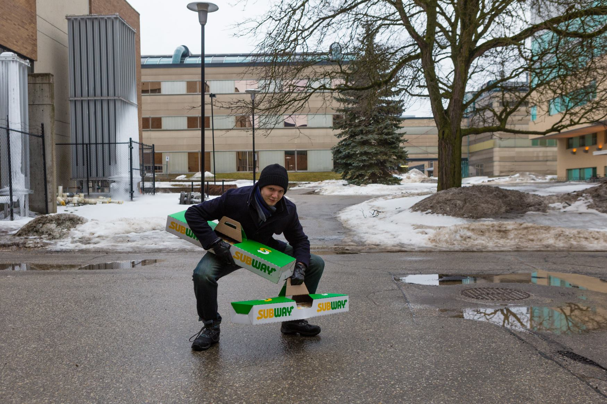
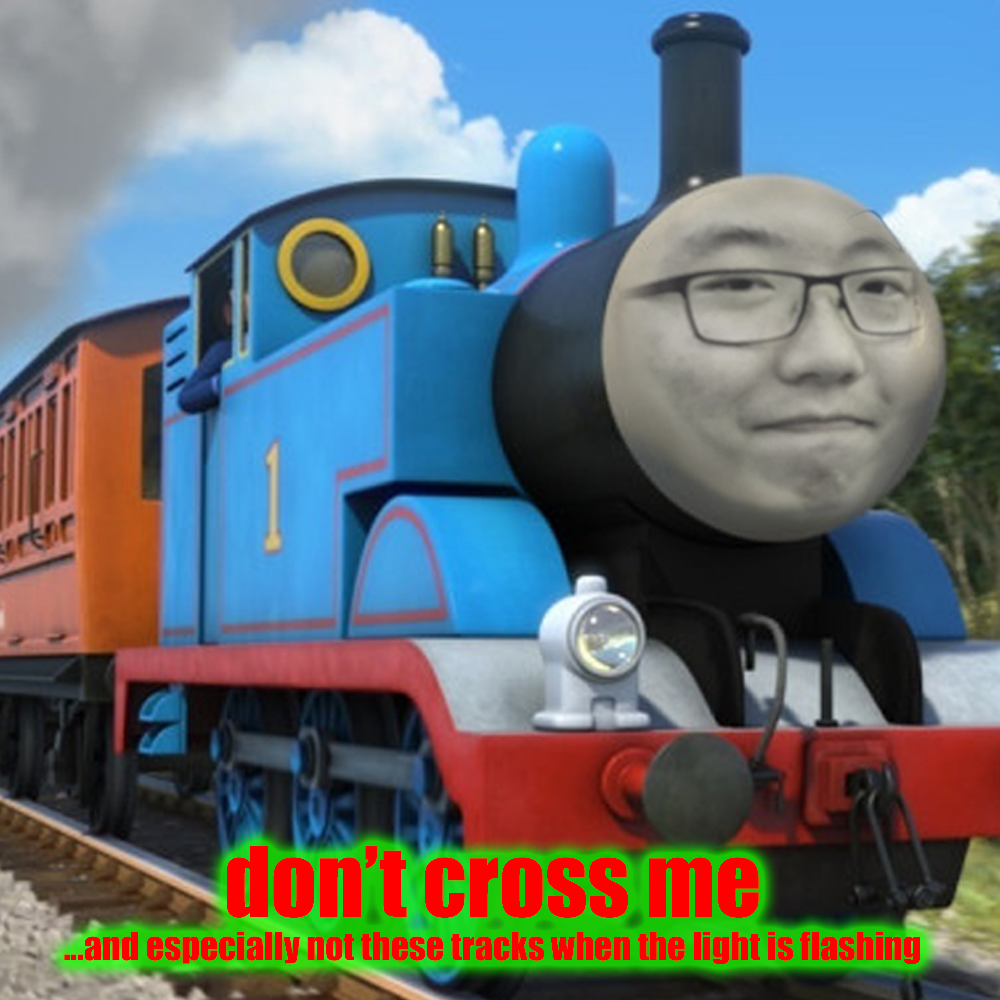
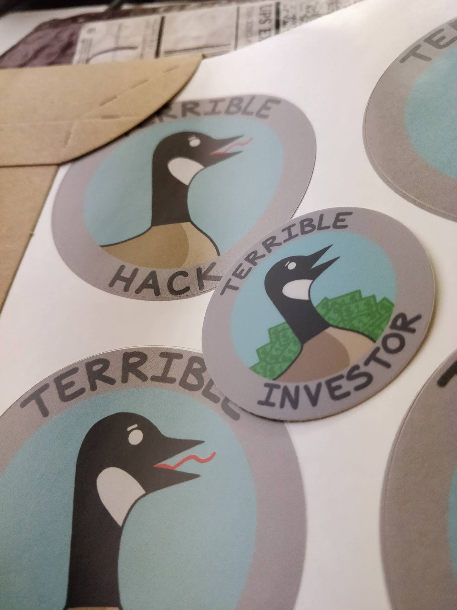

The first one! It was so haphazard that we booked a lecture hall that didn't have outlets in it, so we asked people to bring their own power bars and extension cords to get power from the front of the room. You can read about some of the hacks people made in this blog post.
October 2015: TerribleHack II
We tried to 3D print a trophy for this one. It turned out small and kind of not great. Fitting, I suppose?
I was on a coop term for this one, but thankfully some other students were interested enough in making a TerribleHack happen anyway!
July 2016: TerribleHack IV: A New Joke
Buckle up, this is a wild one.
To the right you'll see the list of "awards" we were going to give out. You may notice that one of them is sponsored by Zynga, the company responsible for Farmville and a bunch of other social games that are much less remembered. That's right, we gained enough notoriety that Zynga reached out to us and asked if they could give us money to be a part of the next TerribleHack!
I like to think they knew they were going to be the butt of the joke a bit. They sent some developers to Waterloo for the event along with some leftover t-shirts from failed game projects to give out. They were nice guys; they even participated and made a dank game of their own.

This year we also made our own t-shirts to give to people, but designed in the most pure, democratic way: an open Facebook poll.


To my extreme regret, the idea that won (by a landslide) was a meta-joke referencing a different option in the poll. Instead of having "frontend developer" on the front and "backend developer" on the back, why not switch it so it says back on the front and front on the back?

So now we all had these shirts that were kind of funny at TerribleHack, required explanation everywhere else, and were not quite funny enough to justify the effort of that explanation. It really do be like that sometimes.
We also had a robot wrestling contest, also sponsored by Zynga. Why? Because we had a bunch of leftover robot kits from an earlier, failed educational hackathon we tried to run and we wanted to make back some of the cost by selling people the kits.
This is another one that happened while I was on coop, and it solidified the original team of organizers as the clear B team, because this one was probably the most professional TerribleHack to date! It had Google and Shopify sponsoring it (mind boggling!), actual catered lunch (I hear they had shawarma!), and limited registration (oh no!!)
After this point, we decided it's probably for the best to sacrifice professionalism for the sake of being able to support having everyone involve. This means this was the first and last TerribleHack to have actual good catering. But it was great while it lasted!
(March 2017) TerribleHack the 6ix
The joke for this one was just that it's the sixth event, and Drake talks about The 6ix. That's it. That's the joke.
That's right, the website for this one is a photo of Yu Chen taking a photo of a whiteboard with a drawing of the site on it. And yes, we made the buttons on the whiteboard actually clickable. The cutout of Richard Stallman on the wall was created as "study notes" that I took into an open book exam with me this term.
By this point, TerribleHack appears to be mainstream enough that, in anticipation for the event, the treasured University of Waterloo publication MathNEWS wrote an article with project ideas! You can see the article larger to read the suggestions.
Although Shopify didn't actually sponsor us this time, they did let us do our hackathon in their nice Uptown Waterloo building! It's all wood, which made it even more concerning when one team, building a smoke detector detector, asked whether or not they could start a fire indoors to test their project. We respectfully asked if they might test it outside instead.

We didn't have real prizes for anyone this time (assuming the "trophies" from before are "real prizes") but we did walk across the street to get some cookies from the grocery store to give to everyone!
This is another one that happened while I was on coop. It is perhaps the most TerribleHack of all TerribleHacks in that it never ended up actually happening.
Remember in 2017 when Apple launched the iPhone 8 and the iPhone X at the same time? With the iPhone 9 mysteriously missing? We did the same thing this year, calling our next event both 8 and X at the same time, skipping 9. Our website is a direct parody of the iPhone X website at the time.
This is the exact moment that we lost track of what number TerribleHack we're on. All numbers from this point on are guesses at best.
For this one, we pretended to launch a new cryptocurrency called TerribleHackCoin, or THC for short. Our whole premise is that instead of a blockchain, we record transactions in a universally editable Google Sheet ("use the honour system," our site reminds you as you try to open the spreadsheet!)
In previous hackathons, we used Tilt to let people donate to help pay for food. After Tilt's shutdown (RIP) we had to switch to other platforms. Unfortunately, pretending to be a scam cryptocurrency does not make platforms want to help us collect money. I think it was worth it for the joke.
I was on my last coop work term for this one, so I'm actually not sure if it happened or not. The website folder for this one just has one image file and nothing else, which appears to also not have the correct number in it. I will let you draw your own conclusions.
For this one, we pretended to be a stealth startup. Our website is a job application form. Uploading a resume looks like it works at first, but shows you a preview that likely does not match the resume you actually uploaded. (Try it, I dare you!)
No one comes to TerribleHack for its food. So, rather than attempting to get good food for lunch, we tried to get funny food instead, and ordered a few 12-foot-long subs from the Subway next to the university.
Unfortunately, the event took place in the middle of a later Winter storm in the Kitchener-Waterloo region, so we had to carry our very long subs across a parking lot made treacherously slippery from freezing rain. With the difficulty of coordinating multiple people per sandwich box and with the cardboard box handles tearing uncomfortably quickly, getting the food to the event was a challenge. We also were given mayonnaise and mustard in comically large vats. Without any good way of getting it out, anyone who wanted condiments had to reach on in with a normal sized plastic utensil.



We raised some money for this one by offering people a mixtape they could buy, the album art for which is shown to the left. It's a compilation album from our band, Don't Cross Me, a band that records bad covers of pop songs. I think we may have also thrown in a "bonus track," which was a one-take rendition of the Bill Nye the Science Guy theme.
Ena drew some geese that turned into stickers for the event. Unlike in previous events, when we accidentally printed stickers so cheaply that the colour wears off or when we printed them way too big (think the size of your hand), these were actually executed really well!

TODO find image!
As this was our last term at the University of Waterloo, we wanted to remedy our mistakes and right our t-shirt wrongs. We decided to print t-shirts again, but this time, with "frontend developer" on the front and "backend developer" on the back.. The shirt itself is not funny, but at least instead of prompting a conversation that leads to a disappointing joke, it prompts a conversation about the history of TerribleHack, in which we are the butt of the joke. That seems better to me.